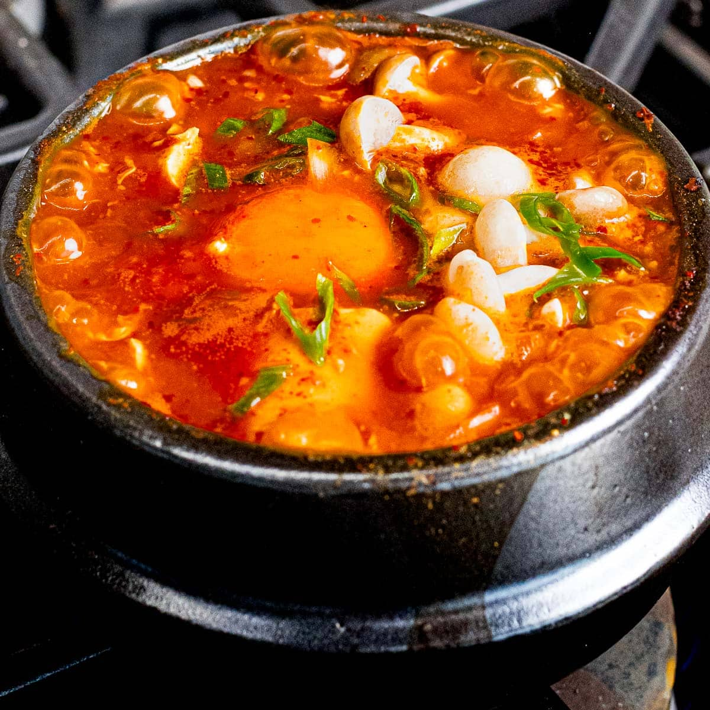

Home
Soondubu-Jjigae Recipe

Description
This is a very popular Korean dish known as Soondubu-Jjigae. It is hot, spicy, filling, and very
delicious. Its primary ingredient is tofu, which is dubu in Korean. It is made spicy
through the use of Korean hot pepper flakes known as Gochugaru.
Ingredients
- 8 large dried anchovies, heads and guts removed
- 5 ounces of radish, peeled, washed, and sliced thinly
- dried kelp (6 x 4 inch piece)
- 2 tablespoons Korean hot pepper flakes (gochugaru)
- 1 teaspoon toasted sesame oil
- 1 teaspoon vegetable oil
- ½ cup pork belly (or any cut of pork: 2.5 ounces), cut into small pieces
- ¼ cup chopped onion
- 1 clove minced garlic
- 1 green onion, chopped
- ½ cup well-fermented kimchi (4 ounces), chopped
- 1 teaspoon kosher salt
- ½ teaspoon sugar
- 1 tube of soft tofu (sundubu)
- 1 egg
Steps
-
Make anchovy kelp stock
- Put dried anchovies, radish, dried kelp, and 4 cups of water in a pot. Cover and boil over medium high heat for 10 minutes until it starts boiling.
- Reduce the heat to low and boil another 20 minutes
- Remove from the heat and strain. It will make about 2 cups of stock.
-
Make the spicy paste
- Combine the hot pepper flakes and the sesame oil in a small bowl and mix well.
-
Put it all together:
- Heat up a 3 cup earthenware pot (ttukbaegi) on the stove over medium high heat for about 3 to 4 minutes. If you use a small heavy pan or pot, it will take less.
- Add the vegetable oil, onion, and garlic. Stir it with a wooden spoon for 1 minute.
- Add the pork. Stir for 3 minutes until the pork is no longer pink.
- Add kimchi and keep stirring for a minute. Add ½ cup anchovy stock. Cover and cook for 7 minutes over medium heat.
- Add the salt and the sugar and mix well.
- Cut the tube of soft tofu into half and squeeze it out into the pot. Gently break up the tofu with a wooden spoon. If you want, add a few tablespoons of stock.
- Put the hot pepper mixture on top and spread it with the spoon.
- Crack the egg and put it on top, in the center of the stew. Let it bubble and sizzle for 1 minute.